Установка головки блока M111.981
Запчасти и моменты
- Прокладка ГБЦ, прокладки впуска, прокладка крышки ГБЦ 6
- О-кольца: воздухозаборник, передняя крышка, термостат 31, отопитель
- Кольца трубы EGR и два кольца натяжителя (2 и 4)
- Болты ГБЦ если L > 105 мм; болты звёздочки выпуска; болты ГБЦ–крышка цепи
- Герметик Omnifit FD 3041 · A 002 989 47 20 10 — болт успокоителя и передняя крышка
| Узел | Момент |
|---|---|
| Болт ГБЦ M12 | 55 Н·м → 90° → 90° |
| ГБЦ к крышке цепи (A на схеме, M8 + шайба) | 18 Н·м → 90° |
| Звёздочка распредвала | 20 Н·м → 60° |
| Крышка подшипника распредвала | 21 Н·м |
| Верхний успокоитель | 10 Н·м |
| Корпус натяжителя в крышке цепи | 80 Н·м |
| Наконечник натяжителя | 40 Н·м |
| Передняя крышка ГБЦ и корпус термостата M6 / M8 | 10 / 25 Н·м |
| Болт демпфера натяжителя ремня (49) | 25 Н·м |
| Крышка ГБЦ / декоративная | 10 / 9 Н·м |
| Впуск к ГБЦ, выпускные фланцы | 20 Н·м |
Специнструмент из листов
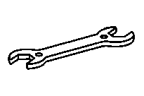
104 589 01 01 00
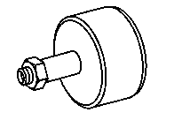
116 589 20 33 00
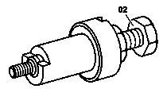
605 589 00 33 00
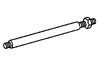
116 589 02 34 00 (271.8; для 111 — 01 34 00)
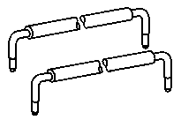
111 589 03 15 00
Болты: куда, резьба, шлиц
Завод M111.981 обычно так: мелкий крепёж крышек — Torx, силовые растягиваемые и крупные пробки — 12-гранник / наружный шестигранник. После чужих рук берите на яму оба набора: Torx T25–T50, шестигранники 8 / 10 / 12 / 13, и обязательно 12-гранную головку 12 мм на болты ГБЦ.
| Куда | Поз. / WIS | Резьба, сколько | Шлиц (завод / что бывает) | Момент |
|---|---|---|---|---|
| Головка блока к блоку | 1–10 · BA01.30-P-1002-01B | M12 × 1.5, длина новая 102 мм, макс. 105 мм · 10 шт | Завод: 12-гранник SW12 (не Torx). После замены часто обычный шестигранник 12 мм — садится хуже, легко слизать | 55 → 90° → 90° |
| ГБЦ к крышке цепи | A / 32 · BA01.40-P-1002-01G | M8 + шайба · на схеме 01GS три точки A · менять | На фото WIS головка как наружный шестигранник (часто 10 или 12 мм). Может стоять Torx T40/T45 | 18 → 90° |
| Крышки подшипников распредвалов | крышки 1–10 · BA05.20-P-1004-02A | WIS резьбу не дал; типично M8, по 2 болта на крышку ≈ 20 шт | На схемах — внешняя головка. Завод часто Torx T40 или шестигранник 10 мм. Не путать крышки местами | 21 Н·м |
| Звёздочка выпускного вала | 28 / 29 · BA05.20-P-1001-02A | WIS резьбу не дал; на фото 3 болта · только новые | На фото похожи на 12-гранник / мелкий hex. Держать вал при откручивании (104 589 01 01 00) | 20 → 60° |
| Верхний успокоитель цепи | 26 / 27 · BA05.10-P-1003-01B | WIS резьбу не дал; обычно M6, 2 болта | Мелкие: завод чаще Torx T30, у вас могут быть hex 8/10 мм | 10 Н·м |
| Ось/палец левого успокоителя | 11 · 04GS | Не обычный болт, а палец с внутренней резьбой под съёмник | Крутить не ключом по шлицу, а съёмником 02/04 (на съёмнике — шестигранник) | посадка на герметик |
| Корпус натяжителя цепи | 3 · BA05.10-P-1002-01B | Крупная резьба в крышку цепи · 1 шт | Большой наружный шестигранник (не Torx), обычно 27 или 32 мм | 80 Н·м |
| Наконечник натяжителя | 1 · BA05.10-P-1001-01B | 1 шт, кольца 2 и 4 новые | Тоже наружный шестигранник, меньше корпуса | 40 Н·м |
| Передняя крышка ГБЦ | BA01.30-P-1001-01B | Смесь M6 (10 Н·м) и M8 (25 Н·м) | Классика эпохи: M6 = Torx T30, M8 = Torx T40. У вас часть уже hex 8/10 мм | 10 / 25 Н·м |
| Корпус термостата | 7, 8 · BA20.10-P-1003-01B | M6 и M8 | На фото 2710PK — явно наружный шестигранник с буртиком (не внутренний Torx) | 10 / 25 Н·м |
| Проушина / демпфер ролика ремня | 6 и 49, болт 9 | WIS для 49: 25 Н·м | На фото — шестигранник с шайбой | 25 Н·м (49) |
| Крышка ГБЦ | 4 · BA01.20-P-1001-01B | WIS резьбу не дал; обычно M6, по периметру | Завод чаще Torx T30; декоративная крышка свечей — отдельный болт 9 Н·м | 10 Н·м |
| Декор / крышка свечей | 2 · BA01.20-P-1002-01B | обычно M6 | Часто hex или Torx T30 | 9 Н·м |
| Впуск к ГБЦ | BA09.20-P-1001-01B | болты и гайки, типично M8 | Гайки — почти всегда наружный шестигранник 12 или 13 мм | 20 Н·м |
| Кронштейн выпуска к КПП / фланец выпуска | 22 · BA49.10-P-1003/1005 | типично M8 / M10 | Шестигранник 12–13 мм, иногда 15 мм на фланце | 20 Н·м |
А. Проверка ГБЦ и болтов
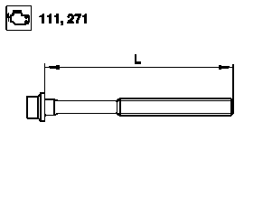
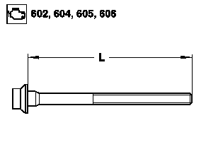
Б. Посадка головы · AR01.30-P-5800-01GS
Слева на схеме — крышка цепи (перед мотора, цилиндр 1). Затягивать строго по номерам 1→10, от центра наружу. Три подхода: 55 Н·м, потом 90°, потом ещё 90°. Резьбу и торец головки болта слегка маслом. Потом не дотягивать.
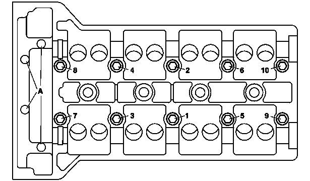
A — болт + шайба M8 к крышке цепи (это поз. 32 в общем листе): новые, под головку чуть масла, 18 Н·м → 90°.
WIS подписывает B 35 (to timing case cover) — рядом с передней стенкой; не путать с порядком 1–10.
В. ГРМ · AR05.20-P-6020GS + 6992 + 7800PK + 04GS
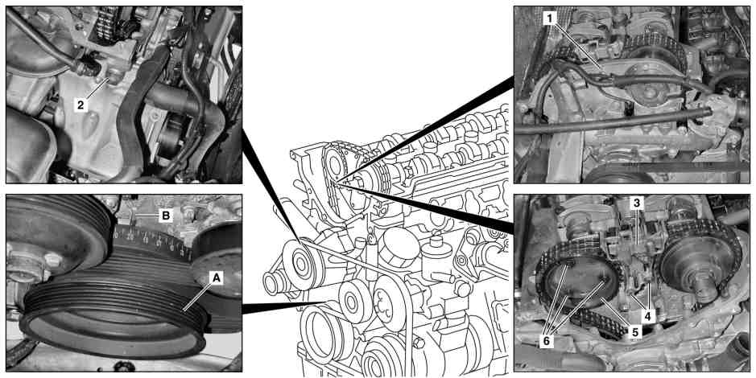
Крышки подшипников · AH05.20-N-6992-01A (мотор 111)
Нумерация 1–10 спереди выпускного вала. Цифры выбиты на крышке и отлиты в голове. Ставить только туда, откуда сняли.
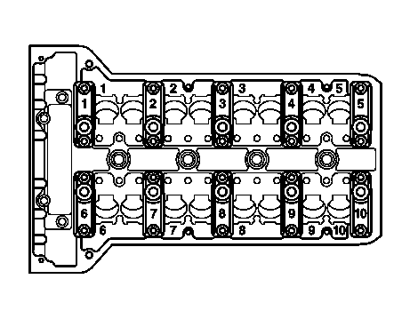
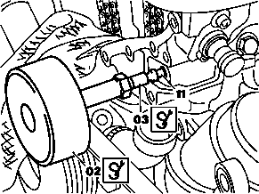
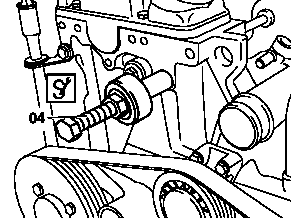
- Новые кольца 2 и 4. Сборка натяжителя, если его разбирали: AR05.10-P-7800-02GS (листа нет — не ослаблять «наполовину»).
- Если натяжитель только открутили и не сняли целиком — WIS требует снять, разобрать и собрать заново.
- Корпус в крышку цепи 80 Н·м, наконечник 40 Н·м.
- На 111.955/981 перед этим компрессор уже снят, генератор накрыт чистой ветошью — ветошь убрать после установки.
Г. Проверка меток · AR05.20-P-6010GS
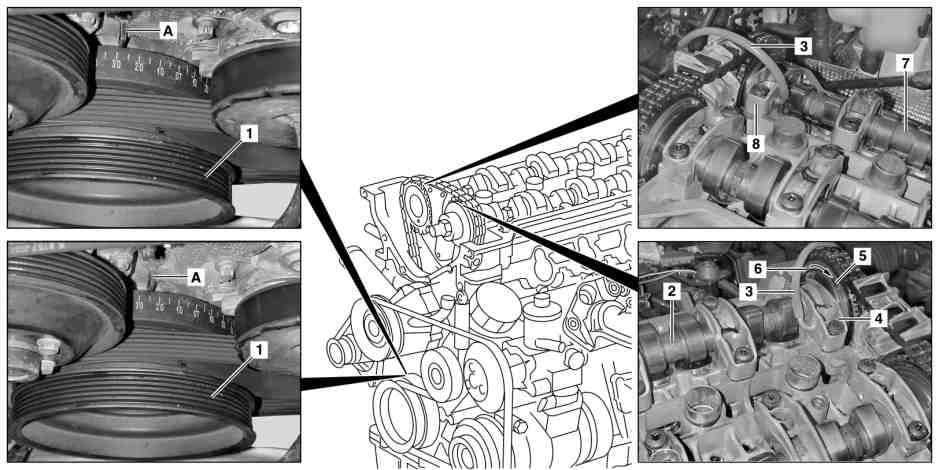
Д. Передняя крышка и термостат · 5700PK + 2710PK

- Плоскости корпуса и передней крышки — чистые. Новое кольцо 31.
- Болты корпуса 7, 8: M6 10 Н·м, M8 25 Н·м.
- Болт проушины 6 / 9 и болт демпфера натяжителя ремня 49 / 9: демпфер 25 Н·м.
- Патрубки ОЖ 2, 3, 4 — осмотреть, хомуты при необходимости новые. Разъём B11/4.
- Укрытие 16 и корпус фильтра — позже, вместе с верхом.
Е. Выпуск, охлаждение, компрессор, вентиляция
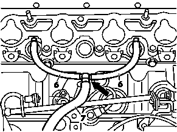
Ж. Впуск, топливо, вакуум
З. Крышка ГБЦ · AR01.20-P-5014PK и запуск
Общие фото щиты с родителя AR01.30-P-5800PK